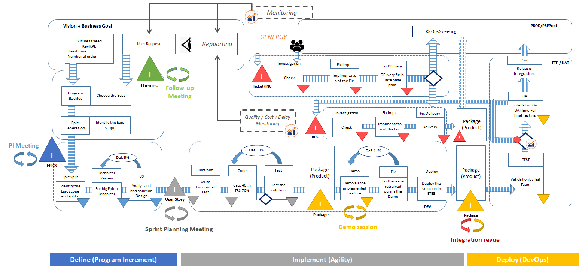

Project Manager - Orange Business Service
Actuellement chef de projet pour OBS sur un projet partagé entre la France et l'Inde. Il est composé de 3 équipes travaillant en parallèle à l'implémentation de fonctionnalités sur la même application. Application BPM permettant de gérer l'affectation des router à l'international pour plusieurs équipes à travers le monde.
Lean IT leader
Le projet est en Agile et les équipes suivent le framework SCRUM. Au cours des dernières années j'ai eu l'occation de mettre en application plusieurs principes du Lean IT afin d'améliorer le time to market des fonctionnalités du projet. Une des premières étapes est de définir une Value Stream Mapping des process:
Nous pouvons alors separer les process en 5 grandes parties:
Une fois les Muda identifiés pour chacune de ces parties nous pouvons alors mettre en place des actions pour en améliorer l'efficacité. C'est un travail en continu qui necéssite d'embarquer tous les acteurs du projet et impacte l'integralité de la chaine de valeurs. Pour atteindre un seul but qui est la satifaction du client.
Projet Manager
La fonction de chef de projet chez SopraSteria est complète et exigeante. J'ai en main l'integratité du projet et suis au quotidien responsable de:
Il en est mille pour chercher à casser les branches du mal quand un seul s'attaque à la racine